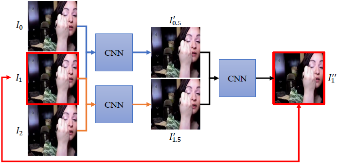

33rd AAAI Conference on Artificial Intelligence (AAAI 2019)

Abstract
Video frame interpolation algorithms predict intermediate
frames to produce videos with higher frame rates and smooth
view transitions given two consecutive frames as inputs. We
propose that: synthesized frames are more reliable if they
can be used to reconstruct the input frames with high quality.
Based on this idea, we introduce a new loss term, the
cycle consistency loss. The cycle consistency loss can better
utilize the training data to not only enhance the interpolation
results, but also maintain the performance better with
less training data. It can be integrated into any frame interpolation
network and trained in an end-to-end manner. In addition
to the cycle consistency loss, we propose two extensions:
motion linearity loss and edge-guided training. The
motion linearity loss approximates the motion between two
input frames to be linear and regularizes the training. By applying
edge-guided training, we further improve results by integrating
edge information into training. Both qualitative and
quantitative experiments demonstrate that our model outperforms
the state-of-the-art methods.
Related Paper
Ziwei Liu, Raymond Yeh, Xiaoou Tang, Yiming Liu, and Aseem Agarwala. Video Frame Synthesis using Deep Voxel Flow.
IEEE ICCV 2017. PDFProject WebsiteCode